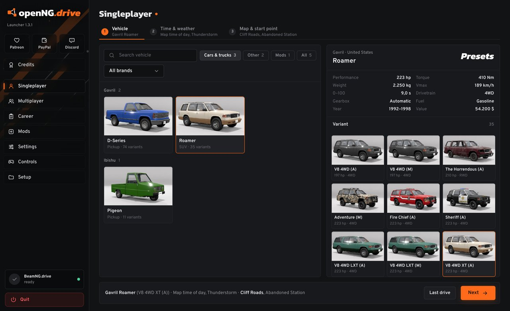
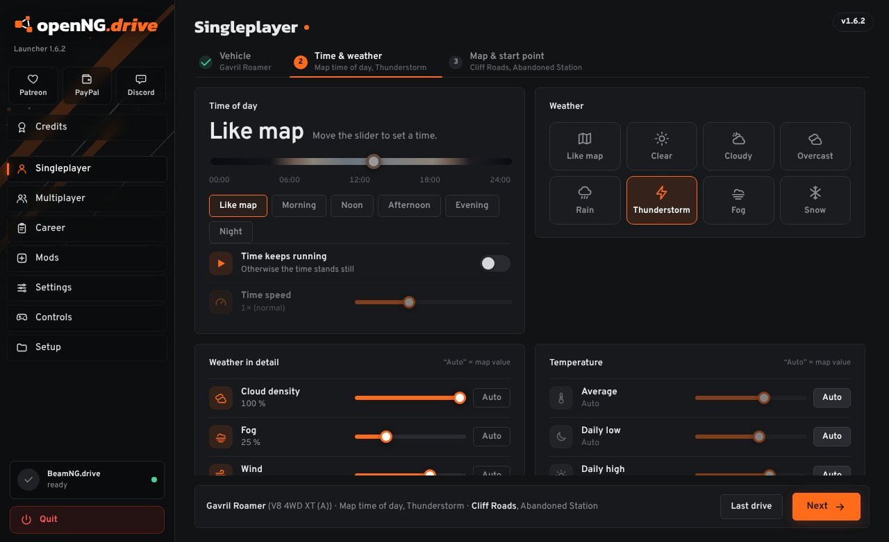
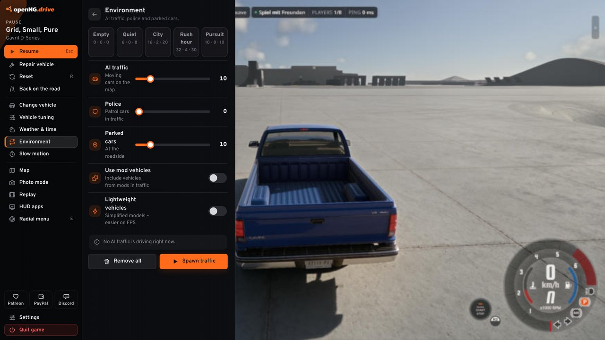
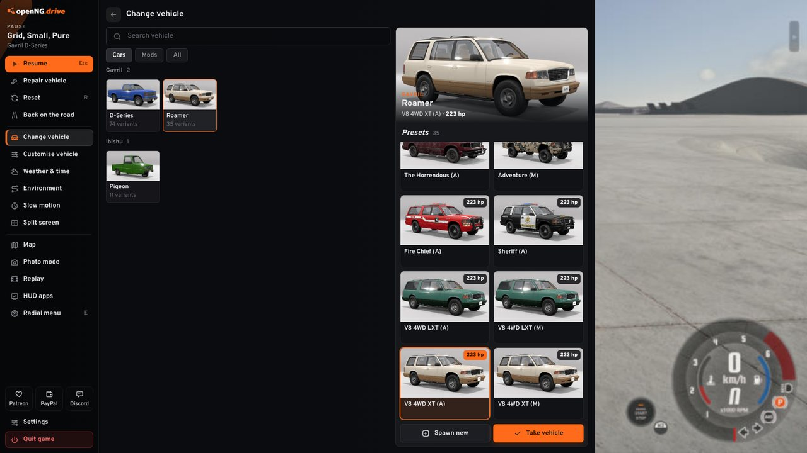
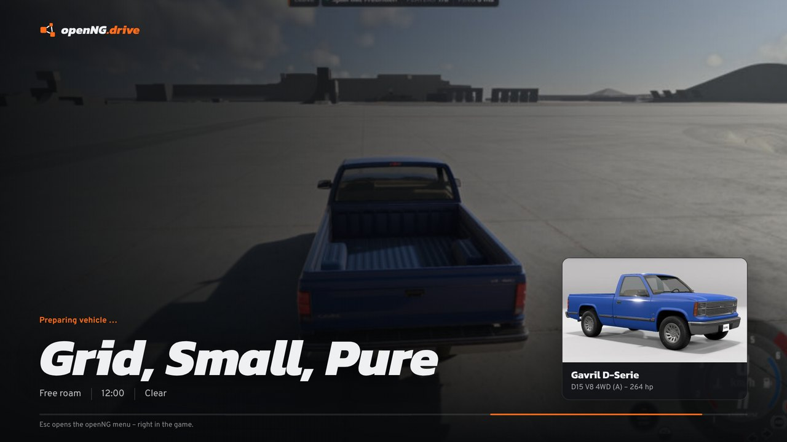
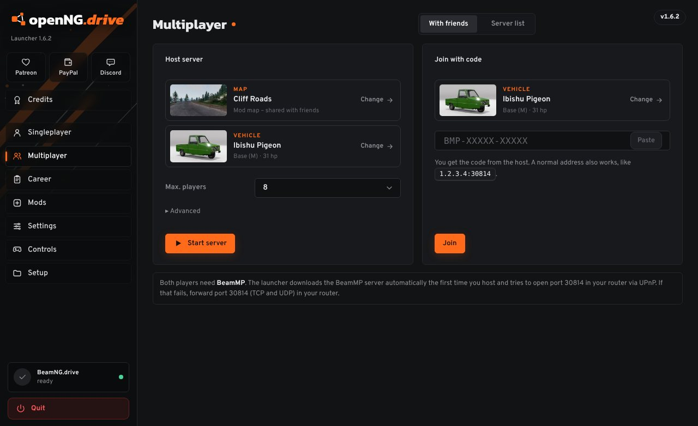
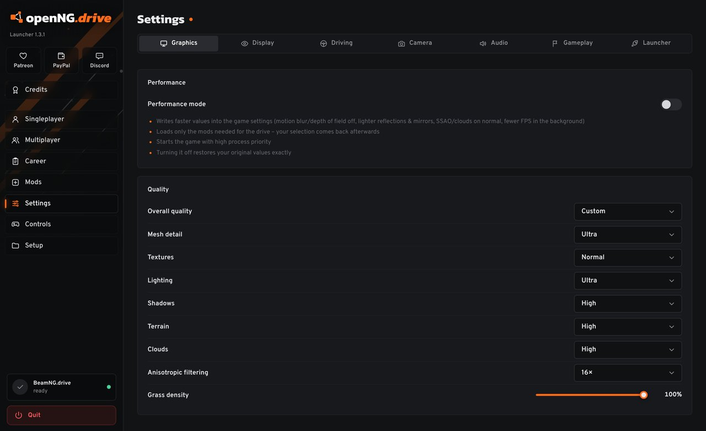

Pick a car, pick a map, drive.
openNG.drive is a launcher for BeamNG.drive. You set up the car, the weather and where you start in one window, and the game loads straight onto the road. It also does BeamMP for playing with friends, and gives you a better menu inside the game.

mods included
with horsepower
Next, drive
Set it all up before the game starts
BeamNG.drive has a lot to offer, but getting into a drive means clicking through a few menus every time. Here it's three steps on one page, and the game opens right where you wanted to be.
- Time of day, or let it run
- Clouds, fog, wind, rain and snow, with real rain sound
- Pick your start point on a minimap of the level
- "Last drive" starts your previous setup again

A better menu when you press Esc
Instead of BeamNG's pause screen you get a panel on the left. The game stays visible behind it and your mouse just works. Everything is in one place:
- Repair, reset or put the car back on the road
- Swap cars, or spawn a second one next to you
- Spawn AI traffic, police and parked cars, as many as your PC can take
- Weather, time, slow motion, photo mode, replays, map and the radial menu



Playing with friends
Host a BeamMP server from the launcher and send your friends a short code. They paste it, and they spawn on your map with the car they chose. Your own mods get shared with them automatically.
- Or browse the public BeamMP servers, with map pictures and player counts
- Career mode together through CareerMP
- The BeamMP installer is in the zip, so there's nothing extra to find

Settings without the detour
Graphics, controls, steering wheel, camera and audio, all changed from the launcher. If your PC struggles, switch on performance mode: it lowers the heavy stuff and puts your own settings back when you switch it off again.
The launcher speaks English, German, French and Russian, and updates itself when there's a new version.

Getting it running
You need Windows 10 or 11 and BeamNG.drive from Steam. That's it.
- Unzip itRight-click the zip, "Extract All…", and put it somewhere like
D:\. You get a folder calledopenNG.drive. - Start openNG.drive.exeThe first time, Windows may say "Windows protected your PC". Click More info and then Run anyway. That shows up for every program that isn't signed with a paid certificate.
- DriveThe launcher finds BeamNG.drive on its own. If it can't, choose the game folder under Setup. For multiplayer, open Multiplayer, Server list, and click Install.
Questions
Something else? Ask on Discord.
- Is this an official BeamNG program?
- No. It's a fan project and not connected to BeamNG GmbH or the BeamMP team. It starts the normal game you bought on Steam.
- Does it change my game files?
- Your game installation stays as it is. The launcher writes only to your BeamNG user folder: settings you change in the launcher, the files for the in-game menu, and a backup of your graphics settings while performance mode is on.
- How do I remove it?
- Delete the folder. Everything the launcher saves for itself is in
openNG-dataright next to the exe. - What is "driving right now" on this page?
- Every open launcher adds one to a public counter every five minutes. Nothing about you is sent, not even a name. You can switch it off in the launcher under Settings, Launcher.
- Was this made with AI?
- Partly, yes. openNG.drive was built with the help of Claude, an AI assistant by Anthropic. The ideas, testing and decisions come from playing the game a lot.
Keeping it going
openNG.drive is free and stays free. If it saves you some clicks, a small donation helps, and so do bug reports.